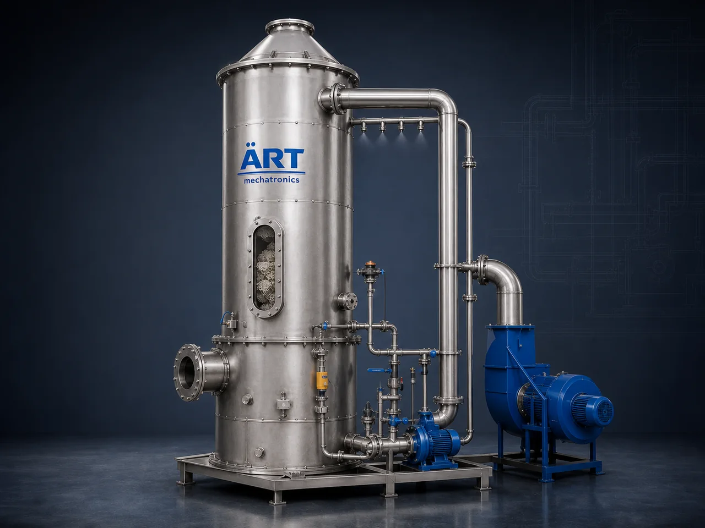

Wet Scrubber System (Industrial Gas Scrubber & Air Pollution Control Equipment)
A Wet Scrubber System is an advanced industrial air pollution control device designed to remove gases, fumes, vapors, odors, and fine particulate matter from industrial exhaust streams using liquid-based scrubbing technology.

About the Wet Scrubber
Unlike dry dust collectors that capture solid particles, wet scrubbers are specifically used to neutralize harmful gases and chemical emissions, making them essential for industries dealing with toxic fumes, acidic gases, and chemical vapors.
Wet scrubbers are widely used in industries such as chemical processing, pharmaceuticals, steel plants, metal finishing, paint industries, battery manufacturing, and wastewater treatment plants, where emission control is critical for environmental compliance and worker safety.
ART Mechatronics provides high-performance wet scrubber systems, engineered for maximum gas absorption efficiency, corrosion resistance, and reliable industrial operation.
One machine, many names
Buyers search for this equipment under many terms — we manufacture all of them:
Working Principle of Wet Scrubber
Gas or fume-laden air enters the scrubber system through:
Air comes in contact with:
Pollutants dissolve or react with liquid
Mist eliminators remove moisture from clean air.
Treated air is safely released into atmosphere.
Contaminated liquid is:
Types of Wet Scrubbers
Industries Using Wet Scrubber Systems
⚗️ Chemical Industry
- Acid fumes
- Chemical vapors
💊 Pharmaceutical Industry
- Solvent fumes
- Chemical processing
🏭 Steel & Metal Industry
- Furnace fumes
- Pickling processes
🎨 Paint & Coating Industry
- VOC emissions
- Spray booths
🔋 Battery & Lithium Industry
- Acid fumes
- Electrochemical emissions
🏗️ Cement & Construction
- Kiln emissions
♻️ Waste & Recycling
- Waste treatment plants
Features & Advantages
- Effective removal of gases and fumes
- High efficiency in chemical absorption
- Suitable for hazardous emissions
- Reduces odor and toxic pollutants
- Corrosion-resistant design
- Compliance with environmental regulations
- Customizable for various applications
Technical Highlights
- Airflow Capacity: Custom designed
- Scrubbing Media: Water / Chemical solution
- Material: FRP / SS / MS with coating
- Efficiency: High for gases and fine particles
- System Type: Single / Multi-stage
- Automation: PLC-based control (optional)
Turnkey Wet Scrubber Solutions
ART Mechatronics offers:
- Complete system design & engineering
- Scrubber selection & sizing
- Ducting and exhaust system integration
- Installation & commissioning
- Effluent handling systems
- After-sales service & AMC
Why Choose Art Mechatronics
- Expertise in gas and fume control systems
- Customized solutions for chemical industries
- High-efficiency and corrosion-resistant systems
- Durable and low-maintenance design
- Proven performance across industries
Applications
- Chemical Processing Plants
- Pharma Manufacturing Units
- Metal Finishing Plants
- Paint & Coating Plants
- Battery Manufacturing Units
- Waste Treatment Plants
Industries that use the Wet Scrubber
Get pricing & specs for the Wet Scrubber
Share the product, target capacity, current process and plant location. These details help our engineers discuss the right machine or line configuration.
One partner, from design to start-up
ART Mechatronics designs, manufactures, installs and commissions your Wet Scrubber solution with regional presence in India, UAE and Thailand.